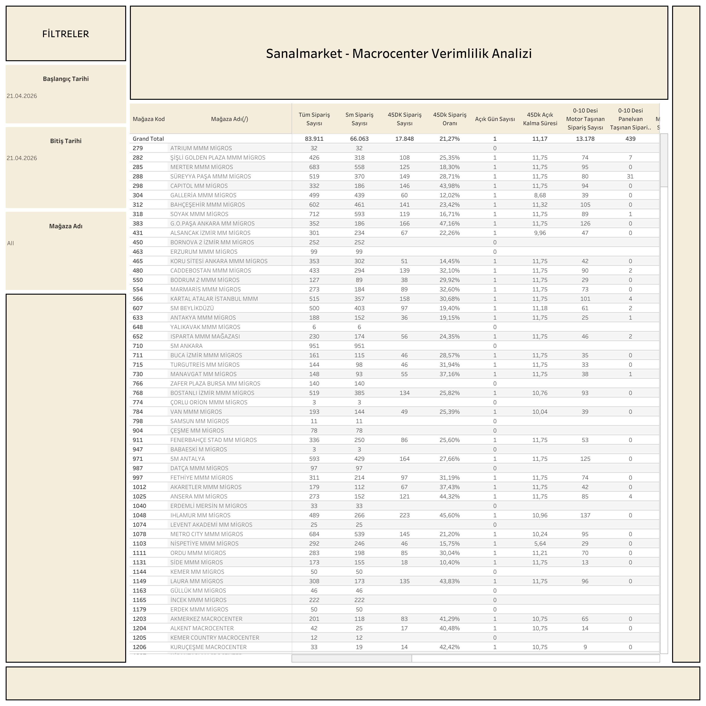

Canlı Rapora Erişin
Güncel verimlilik verilerini Tableau üzerinde interaktif olarak görüntüleyin.
Dashboard Hakkında
Ne Gösterir?
SanalMarket - Macrocenter Verimlilik Analizi, bu iki özel operasyon kanalının kurye ve mağaza bazlı verimlilik performansını karşılaştırmalı sunar. Lead time, sipariş hacmi ve operasyonel süreçlerin analizi için kullanılır.
- Kanal Bazlı Karşılaştırma: SanalMarket ve Macrocenter operasyonlarının yan yana performans analizi
- Lead Time Metrikleri: Kanal bazında ortalama lead time ve dağılım grafikleri
- Sipariş Hacmi: Günlük ve dönemsel sipariş sayısı trendleri
- Kurye ve Mağaza Detayı: Kurye ve mağaza bazında verimlilik kırılımı
Dashboard Önizleme

SanalMarket - Macrocenter Verimlilik Analizi — Tableau